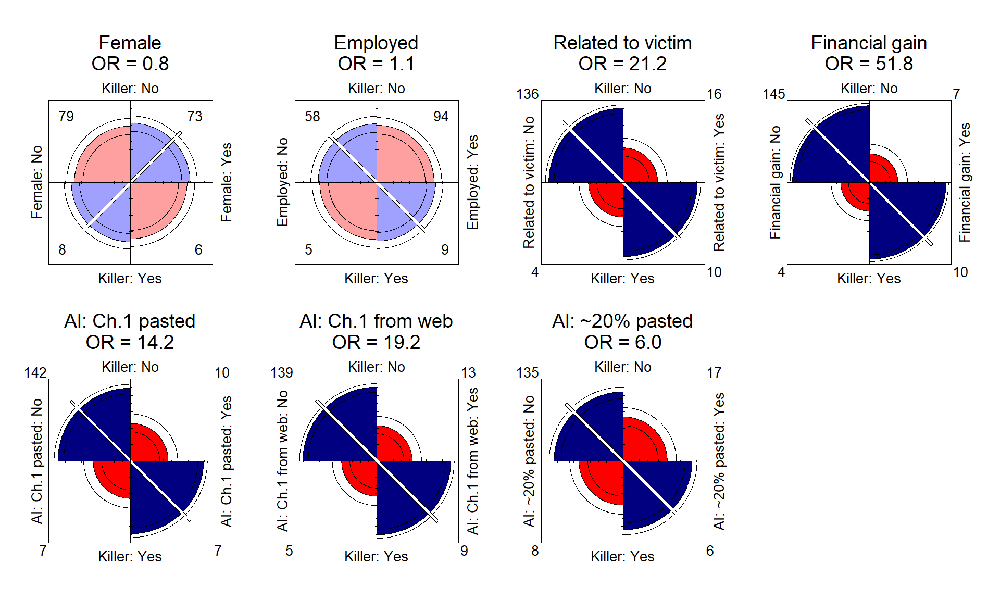
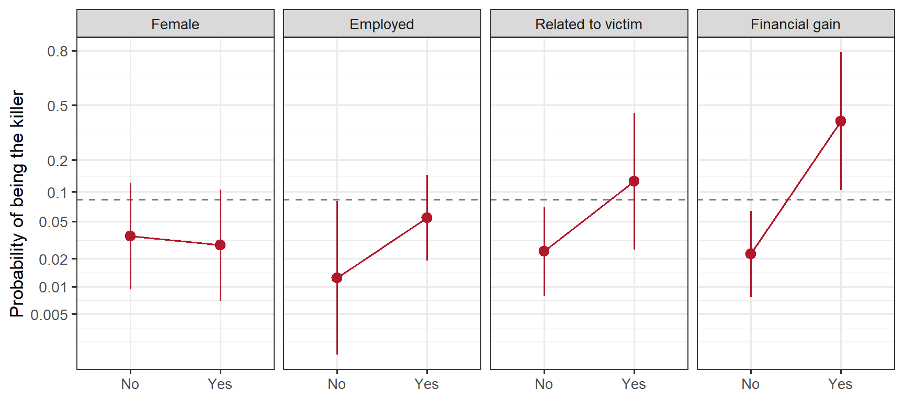
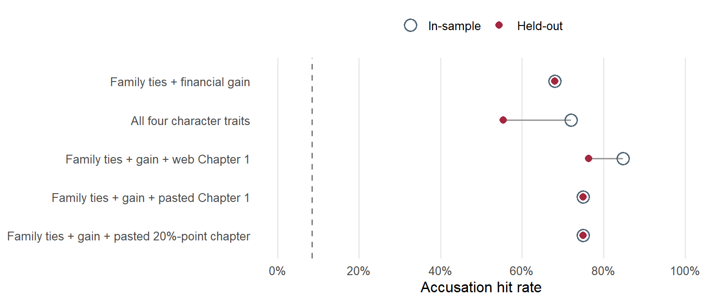

Lutz (2026, Significance) used statistics and AI to unmask the killers in Agatha Christie’s Miss Marple novels. A reanalysis uncovers some flaws and applies other techniques: logistic and within-novel conditional logit models, cross-validation, and statistical graphics.
Author
Michael Friendly
Published
November 15, 2026
Miss Marple examines the will of a murder victim at the manor-house desk as the maid, butler, and three relatives look on. An amber poison bottle stands nearby.
Introduction
A recent article by Lutz (2026) in Significance caught my eye. I’ve always been a fan of Agatha Christie’s books, and the idea of using AI to solve murder mysteries appealed to me.
What would Hercule Poirot be able to do with a few extra “little grey cells”, the phrase he used to emphasize the skills of logical deduction, psychology, and quiet mental analysis over merely physical evidence or external clues, of the kind pursued by more hide-bound detectives of popular fiction?
Whether or not modern AI tools can be useful more generally in the analysis of detective fiction or whether it will just spoil the fun of reading is a question I leave for others to ponder.
Lutz analysis
Lutz coded 166 main characters in the 12 Miss Marple novels (14 killers) by gender, employment, relation to the victim, and financial gain, and added three AI “guesses” (Harvard AI Sandbox, GPT 5.1/5.6) based on the opening of each novel. Her question was essentially “Could a LLM become a consulting detective?”
This document reproduces her analysis, corrects the odds ratios in her Table 1, and extends it with multivariable and conditional (within-novel) logistic models. It also gives me a chance to try out some of my graphical methods for categorical data analysis in the vcd(Meyer et al. 2026), vcdExtra(Friendly and Klorfine 2026), and ggfourfold(Klorfine and Friendly 2026) packages.
Only the code for the key models is shown here. All of the code, including the figures, is in AgathaChristie.R and figures.R.
Code: Read the data
library(survival) # clogit()library(pROC) # auc()library(vcd) # oddsratio()library(vcdExtra)dat <-read.csv("AgathaChristie_MissMarple_MainCharacters_v2.csv",fileEncoding ="UTF-8-BOM")dat$Title <-factor(dat$Title)dat$Novel <-factor(gsub("_", " ", dat$Title))preds <-c("Female", "Employed", "Related", "Financial")ai_preds <-c("AIch1passage", "AIch1web", "AIch20p")labels <-c(Female ="Female", Employed ="Employed", Related ="Related to victim",Financial ="Financial gain", AIch1passage ="AI: Ch.1 pasted",AIch1web ="AI: Ch.1 from web", AIch20p ="AI: ~20% pasted")# factor copies for tables & plotsfac <- datfor (v inc("Killer", preds, ai_preds)) fac[[v]] <-factor(dat[[v]], levels =0:1, labels =c("No", "Yes"))# draw to the knitr device inside Quarto, otherwise save a PNG in figures/in_knitr <-isTRUE(getOption("knitr.in.progress"))if (!in_knitr) dir.create("figures", showWarnings =FALSE)savefig <-function(name, expr, width =7, height =6) {if (!in_knitr) {png(file.path("figures", paste0(name, ".png")), width = width, height = height,units ="in", res =150)on.exit(dev.off()) } exprinvisible()}aucval <-function(fit) as.numeric(auc(dat$Killer, fitted(fit), quiet =TRUE))
The data
Lutz’s data, from her GitHub repository, have one row per character, with the novel’s title and 0/1 indicators for being the killer, the four character traits, and the three AI guesses. The setup code above reads them and makes No/Yes factor copies for tables and plots. A copy of the data file is here: AgathaChristie_MissMarple_MainCharacters_v2.csv.
The output below gives the counts, the percentage of characters with each trait (or flagged by each AI guess), and a three-way table of Killer by Related and Financial gain, the two traits that matter most.
166 characters, 14 killers, 12 novels
Percent of characters
Character traits
Killer Female Employed Related Financial
8.4 47.6 62.0 15.7 10.2
AI guesses
AIch1passage AIch1web AIch20p
10.2 13.3 13.9
Only 8.4% of the characters are killers, 14 in 12 novels (two novels have two). About half the characters are female and most are employed, but only 16% are related to the victim and 10% stand to gain financially. Each AI guess flags 10–14% of the characters.
Code: Killer by Related and Financial gain
# Shade by residuals from joint independence, [Related Financial][Killer]: does being the# killer depend on the combination of family ties and financial gain?# Financial is listed before Related on purpose: color_table() (vcdExtra 0.9.8) misplaces# residuals from a user-supplied model unless the last row variable in the formula varies# fastest in the table (see vcdExtra/issues/color_table-model-residuals.md)tab3 <-xtabs(~ Financial + Related + Killer, fac)dimnames(tab3)$Related <-c("Not related", "Related")dimnames(tab3)$Financial <-c("No gain", "Gain")mod3 <- MASS::loglm(~ Related * Financial + Killer, data = tab3, fitted =TRUE)# capture.output() drops the console copy of the shading note, which legend = TRUE# already puts under the tableinvisible(capture.output( ct3 <-color_table(tab3, formula = Killer ~ Related + Financial, model = mod3, legend =TRUE)))ct3
Killer
Total
No
Yes
Not related
No gain
135
2
137
Gain
1
2
3
Related
No gain
10
2
12
Gain
6
8
14
Total
152
14
166
Shading based on residuals from fitted model, X^2 = 65.87, df = 3, p = 3.275e-14
Figure 1: Three-way table of Killer by Related and Financial gain, drawn with vcdExtra::color_table(). Cells are shaded by Pearson residuals from the model in which being the killer is independent of the Related × Financial combination: blue cells hold more characters than that model expects, red cells fewer, and darker shades mean larger departures.
The table already tells most of the story. Of the 14 characters who are both related and stand to gain, 8 are killers, while only 2 of the 137 with neither trait are. The shading in Figure 1 makes this visible at a glance: blue marks cells with more characters than we would expect if being the killer had nothing to do with family ties or financial gain, red marks cells with fewer, and the darkest blue is those 8 related heirs.
Related and Financial gain
A quick look at the association between the two traits that best identify the killers. If they go together, they partly tell the same story, which matters when both are in one model.
Code: Chi-square and odds ratio, Related × Financial
# Lutz: Pearson chi-square for Related x Financial = 58.3 -- that's the Yates-corrected value# (uncorrected: 63.8). Either way, expected counts are small; the OR is the better summary.chisq.test(xtabs(~ Related + Financial, fac))oddsratio(xtabs(~ Related + Financial, fac), log =FALSE)
Pearson's Chi-squared test with Yates' continuity correction
data: xtabs(~Related + Financial, fac)
X-squared = 58.269, df = 1, p-value = 2.287e-14
odds ratios for Related and Financial
[1] 53.27778
They do go together (OR = 53): an heir is usually a relative. Lutz’s chi-square of 58.3 for this table is the Yates-corrected value (uncorrected, 63.8). With expected counts this small, the odds ratio is the better summary.
Reproducing Lutz’s Table 1
Lutz’s Table 1 gives, for each predictor on its own, an odds ratio with its confidence interval and p-value, and the AUC. Her multivariable models are reported only by their AUCs. The first step is to see whether these numbers can be reproduced, and how they were calculated.
Univariate “odds ratios”
Lutz’s odds ratios are all between 0.98 and 1.75, which is far too small for binary predictors with AUCs of 0.80 or more. They are reproduced exactly by exponentiating the slopes of a linear probability model (glm(..., family = gaussian)), i.e. exp(difference in proportions), not by logistic regression:
Code: Reproduce Lutz’s Table 1 with a linear probability model
# Lutz's Table 1 "odds ratios" are reproduced exactly by exp(coef) from a *linear*# probability model (gaussian glm), not from logistic regression.lutz <-t(sapply(c(preds, ai_preds), function(v) { fit <-glm(reformulate(v, "Killer"), family = gaussian, data = dat) ci <-exp(confint.default(fit)[2, ])c(OR =exp(coef(fit)[[2]]), lower = ci[[1]], upper = ci[[2]],p =summary(fit)$coefficients[2, 4], AUC =aucval(fit))}))rownames(lutz) <- labels[rownames(lutz)]round(lutz[order(lutz[, "AUC"]), ], 3)
OR lower upper p AUC
Employed 1.008 0.923 1.100 0.858 0.512
Female 0.984 0.904 1.072 0.713 0.526
AI: ~20% pasted 1.227 1.090 1.383 0.001 0.658
AI: Ch.1 pasted 1.440 1.266 1.638 0.000 0.717
AI: Ch.1 from web 1.454 1.301 1.626 0.000 0.779
Related to victim 1.428 1.287 1.583 0.000 0.805
Financial gain 1.753 1.569 1.959 0.000 0.834
A difference in proportions lies between −1 and 1, so its exponential can never be smaller than 1/e ≈ 0.37 or larger than e ≈ 2.72, however strong the association. Her AUCs are not affected: with a single binary predictor, every model ranks the characters the same way. Her p-values, also from the linear model, are much smaller than the logistic ones below, but they put the predictors in the same order. It is the odds ratios themselves that are wrong.
Multivariable AUCs
The AUC (area under the ROC curve) is the probability that a randomly chosen killer gets a higher fitted score than a randomly chosen innocent character: 0.5 is chance, 1 is perfect. Here it is computed with the pROC package (Robin et al. 2011). Her four multivariable models add each AI guess, in turn, to Related and Financial gain. Fitting them as logistic regressions, her AUCs (0.89, 0.89, 0.97, 0.92) reproduce too:
Code: AUCs for Lutz’s multivariable models
# Lutz's four multivariable models (AUC only is reported; AUC is the same for logit or LPM# only when the fitted values have the same ordering, so use the logistic fits)lutz_models <-list("Related + Gain"= Killer ~ Related + Financial,"Related + Gain + AI ch1"= Killer ~ Related + Financial + AIch1passage,"Related + Gain + AI web"= Killer ~ Related + Financial + AIch1web,"Related + Gain + AI 20%"= Killer ~ Related + Financial + AIch20p)lutz_fits <-lapply(lutz_models, glm, family = binomial, data = dat)data.frame(AUC =round(sapply(lutz_fits, aucval), 3),Lutz =c(0.89, 0.89, 0.97, 0.92))
AUC Lutz
Related + Gain 0.892 0.89
Related + Gain + AI ch1 0.895 0.89
Related + Gain + AI web 0.969 0.97
Related + Gain + AI 20% 0.918 0.92
So the problem is confined to the odds ratios. Adding the AI’s web-based guess raises the AUC from 0.89 to 0.97; the other two guesses add little.
Correct odds ratios
For a binary outcome, the odds ratio comes from logistic regression: exp(slope) in glm(Killer ~ x, family = binomial) is the odds of being the killer for characters with the trait, divided by the odds for those without it. For a single binary predictor this is just the cross-product ratio of the 2 × 2 table.
Univariate logistic regressions
The code fits one logistic regression for each predictor, with profile-likelihood 95% confidence intervals, and sets the result beside Lutz’s values (Lutz_OR). The rows are sorted by AUC, so the weakest predictors come first.
Lutz_OR OR lower upper p AUC
Employed 1.008 1.111 0.365 3.764 0.857 0.512
Female 0.984 0.812 0.256 2.444 0.711 0.526
AI: ~20% pasted 1.227 5.956 1.777 19.293 0.003 0.658
AI: Ch.1 pasted 1.440 14.200 4.149 50.109 0.000 0.717
AI: Ch.1 from web 1.454 19.246 5.814 71.212 0.000 0.779
Related to victim 1.428 21.250 6.345 85.094 0.000 0.805
Financial gain 1.753 51.786 13.932 232.931 0.000 0.834
The correct odds ratios are much larger than Lutz’s. A character who gains financially from the murder has about 50 times the odds of being the killer; being related to the victim, about 20 times. Gender and employment are irrelevant. The AI guesses fall in between, with odds ratios of 6 to 19. The AUCs are unchanged, because AUC depends only on how the fitted values rank the characters, and with one binary predictor every model ranks them the same way.
The confidence intervals are wide (financial gain: 14 to 233), as they must be with only 14 killers. The odds ratios are clearly different from 1, but their size is not well determined.
Fourfold displays
A fourfold display(Friendly 1994; Friendly and Meyer 2016, Ch. 4) shows each 2 × 2 table as four quarter circles, one per cell, with area proportional to the cell count. Here the counts are first standardized so that both margins are equal. This removes the fact that only 8% of the characters are killers, leaving only the association.
In each panel below, the rows are Killer (No at top, Yes at bottom) and the columns are the predictor (No at left, Yes at right). The raw counts are in the corners. When the odds ratio is greater than 1, the No/No and Yes/Yes quadrants (top left and bottom right) are larger than the other two, and the white diagonal runs between them. The rings around each quadrant show 95% confidence limits for the odds ratio: if the rings for adjacent quadrants don’t overlap, the odds ratio differs significantly from 1, and those panels are shaded in darker colors.
Code: Fourfold displays
# Fourfold displays: Killer vs. each predictor. Area of each quarter circle ~ frequency,# standardized to equal margins; confidence rings that don't overlap => OR != 1.# ggfourfold: one plot per predictor, combined with patchwork. labels = "both" labels each# side "Variable: level", as in vcd, taking the names from the columns, so give them their# display names. (Facets can't do this: per-panel level names need free scales, which# facet_wrap() refuses with ggfourfold's fixed aspect ratio.) Shading intensity marks ORs# significant at 95%; with separate plots there is no Holm adjustment across panels, but# the faceted version with it shaded the same panels. (needs ggfourfold >= 0.1.1.9000)library(ggplot2)library(ggfourfold)library(patchwork)ff_vars <-c(preds, ai_preds)ff_lab <-sprintf("%s\nOR = %.1f", labels[ff_vars], uni[labels[ff_vars], "OR"])ff <-setNames(fac[c("Killer", ff_vars)], c("Killer", labels[ff_vars]))ff_plots <-lapply(seq_along(ff_vars), function(i)ggplot(ff, aes(x = .data[[labels[[ff_vars[i]]]]], y = Killer)) +geom_fourfold(labels ="both") +labs(title = ff_lab[i]) +theme_fourfold() +theme(plot.title =element_text(face ="plain", size =14, hjust =0.5)))savefig("fourfold", {print(wrap_plots(ff_plots, nrow =2))}, width =10, height =6)

Figure 2: Fourfold displays (ggfourfold) of Killer (top/bottom) by each predictor (left/right). Quarter-circle areas show the cell frequencies, standardized to equal margins; non-overlapping 95% confidence rings and intense shading mean the odds ratio differs from 1. The white diagonal marks the direction of association.
The panels for Female and Employed are nearly round, with overlapping rings and pale shading: no association. In the other five, the Yes/Yes quadrant of killers with the trait is far larger than its neighbors, most of all for Related and Financial gain. The AI guesses look much like the character traits, but weaker, and the ~20% passage is the weakest of all.
All non-AI predictors together
The univariate odds ratios ask about each predictor on its own, but Related and Financial are strongly associated (OR ≈ 53), so they partly tell the same story. To see what each contributes given the others, fit one logistic model with all four non-AI predictors. drop1() gives a likelihood-ratio (LR) test for removing each term from the full model. LR tests are more trustworthy than the Wald z tests in summary() when there are only 14 events.
Main-effects model
Code: Main-effects logistic model
# All the non-AI predictors together; LR test for dropping each onefull <-glm(Killer ~ Female + Employed + Related + Financial, family = binomial, data = dat)summary(full)drop1(full, test ="LRT")
Call:
glm(formula = Killer ~ Female + Employed + Related + Financial,
family = binomial, data = dat)
Coefficients:
Estimate Std. Error z value Pr(>|z|)
(Intercept) -4.8870 1.3255 -3.687 0.000227 ***
Female -0.2259 0.9684 -0.233 0.815545
Employed 1.5204 1.1397 1.334 0.182177
Related 1.7753 1.0374 1.711 0.087030 .
Financial 3.3630 1.0551 3.187 0.001436 **
---
Signif. codes: 0 '***' 0.001 '**' 0.01 '*' 0.05 '.' 0.1 ' ' 1
(Dispersion parameter for binomial family taken to be 1)
Null deviance: 96.027 on 165 degrees of freedom
Residual deviance: 53.933 on 161 degrees of freedom
AIC: 63.933
Number of Fisher Scoring iterations: 6
Single term deletions
Model:
Killer ~ Female + Employed + Related + Financial
Df Deviance AIC LRT Pr(>Chi)
<none> 53.933 63.933
Female 1 53.988 61.988 0.0552 0.814291
Employed 1 55.909 63.909 1.9762 0.159788
Related 1 56.697 64.697 2.7635 0.096439 .
Financial 1 66.877 74.877 12.9437 0.000321 ***
---
Signif. codes: 0 '***' 0.001 '**' 0.01 '*' 0.05 '.' 0.1 ' ' 1
With all four together, financial gain carries most of the weight (LR χ² = 12.9, p < .001). Related is only marginal once gain is in the model (p = .10), and Female adds nothing.
Effect plot
An effect plot (Fox 2003) shows the same model on the probability scale. Each panel gives the fitted probability of being the killer at each level of one predictor, averaging over the other three, with 95% confidence intervals.
Code: Effect plot
# Effect plot for the four-predictor model: fitted P(Killer) at each level of one predictor,# averaging over the others in proportion to their distribution (effects::Effect()).# Refit with factors so each effect has two levels, not a line from 0 to 1.# (ggeffects::predict_response() instead fixes the other factors at their reference level,# i.e. a character who is none of the four.) Drawn with ggplot on a logit scale, so all four# panels share one scale; the dashed line is the overall proportion of killers.library(effects)library(ggplot2)full_f <-glm(Killer ~ Female + Employed + Related + Financial, family = binomial, data = fac)eff <-do.call(rbind, lapply(preds, function(v) { d <-as.data.frame(Effect(v, full_f))data.frame(Predictor = labels[[v]], Level = d[[v]],fit = d$fit, lower = d$lower, upper = d$upper)}))eff$Predictor <-factor(eff$Predictor, levels = labels[preds])savefig("effects-full", { p_breaks <-c(.005, .01, .02, .05, .1, .2, .5, .8)print(ggplot(eff, aes(Level, fit)) +geom_hline(yintercept =mean(dat$Killer), linetype ="dashed", colour ="grey50") +geom_line(aes(group =1), colour ="#B2182B") +geom_pointrange(aes(ymin = lower, ymax = upper), colour ="#B2182B") +facet_wrap(vars(Predictor), nrow =1) +scale_y_continuous(transform ="logit", breaks = p_breaks, labels =as.character(p_breaks)) +labs(x =NULL, y ="Probability of being the killer") +theme_bw(base_size =13) )}, width =9, height =4)# Standalone run: also draw the figures defined in figures.R (cv hit rates, AI flag table)if (!in_knitr) source(file.path("R", "figures.R"), print.eval =TRUE)

Figure 3: Effect plot for the four-predictor logistic model: fitted probability of being the killer at each level of one predictor, averaged over the others, with 95% confidence intervals. The y-axis is on the logit scale, which is common to all panels; the dashed line is the overall proportion of killers (14/166).
Financial gain moves the probability of guilt from about 2% to 40%, and being related moves it from 2% to 13%. Employed now looks positive (adjusted OR ≈ 4.6, against 1.1 on its own), but its interval is wide (p = .16). The shift happens because employed characters rarely gain financially (7 of 103), but 6 of those 7 are killers.
Related × Financial interaction
Is the effect of financial gain the same for relatives and non-relatives? Adding a Related × Financial interaction tests this:
Code: Related × Financial interaction
# Does the effect of financial gain depend on being related?full_int <-update(full, . ~ . + Related:Financial)anova(full, full_int, test ="LRT")
Analysis of Deviance Table
Model 1: Killer ~ Female + Employed + Related + Financial
Model 2: Killer ~ Female + Employed + Related + Financial + Related:Financial
Resid. Df Resid. Dev Df Deviance Pr(>Chi)
1 161 53.933
2 160 48.715 1 5.2184 0.02235 *
---
Signif. codes: 0 '***' 0.001 '**' 0.01 '*' 0.05 '.' 0.1 ' ' 1
The exploratory interaction test gives p = .02. Among characters who stood to gain, 2 of the 3 unrelated characters and 8 of the 14 relatives were killers.
Reducing the model and adding the AI guesses
Finally, two questions about the predictor set. Can Female and Employed be dropped together, leaving Related + Financial as the base model? And once Related and Financial are known, does each AI guess add anything? Both are LR tests of nested models.
Code: LR tests for dropping traits and adding AI guesses
# reduced model: Related + Financial (joint test of dropping Female and Employed),# then add each AI predictorbase <-glm(Killer ~ Related + Financial, family = binomial, data = dat)anova(base, full, test ="LRT")ai_add <-t(sapply(ai_preds, function(v) { fit <-update(base, reformulate(c("Related", "Financial", v), "Killer")) lr <-anova(base, fit, test ="LRT")c(OR_AI =exp(coef(fit)[[v]]), LR_chisq = lr$Deviance[2], p = lr$`Pr(>Chi)`[2],AUC =aucval(fit))}))rownames(ai_add) <- labels[rownames(ai_add)]round(ai_add, 3)
Analysis of Deviance Table
Model 1: Killer ~ Related + Financial
Model 2: Killer ~ Female + Employed + Related + Financial
Resid. Df Resid. Dev Df Deviance Pr(>Chi)
1 163 57.819
2 161 53.933 2 3.8856 0.1433
OR_AI LR_chisq p AUC
AI: Ch.1 pasted 8.887 6.395 0.011 0.895
AI: Ch.1 from web 41.642 16.546 0.000 0.969
AI: ~20% pasted 3.472 2.192 0.139 0.918
Female and Employed together add nothing (p = 0.14), so Related + Financial is the base model from here on. Adding the AI’s web-based Chapter 1 guess improves it a lot (LR χ² = 16.5, AUC 0.97), and adding the pasted Chapter 1 helps less (p = .01). The ~20% passage adds nothing significant (p = .14).
Conditional logistic regression: comparing suspects within a novel
Each novel is a closed circle of suspects with one (or two) killers, so the natural model compares the killer with the other characters in the same book: conditional logit, fit with clogit() from the survival package (Therneau 2026) using strata(Title), e.g.
clogit(Killer ~ Female + Employed + Related + Financial +strata(Title), data = dat)
The output below shows, for each novel, the number of characters and killers and how many gain financially. It then gives univariate conditional ORs, LR tests for dropping each term from the full model, and LR tests for adding each AI guess to Related + Financial.
Code: Conditional logistic regressions
# Conditional logit: each novel is a matched set, so the killer is compared only with the# other suspects in the same book. The novel-level baseline (number of characters, number of# killers) drops out.## Financial gain is *separated* within novels: in every novel where some non-killer gains# financially, the killer gains too. So its conditional OR is infinite (clogit warns "beta may# be infinite"). Wald tests and CIs are then useless, but likelihood-ratio tests are fine,# so we report LR tests throughout.within <-do.call(rbind, lapply(split(dat, dat$Novel), function(x)c(characters =nrow(x), killers =sum(x$Killer),killer_gains =sum(x$Financial[x$Killer ==1]),others_gain =sum(x$Financial[x$Killer ==0]))))withinclfit <-function(f) suppressWarnings(clogit(f, data = dat))# LR test against the null conditional model (loglik[1] is the loglik at beta = 0)cl_lr <-function(fit) { chi <-2*diff(fit$loglik)c(LR_chisq = chi, p =pchisq(chi, length(coef(fit)), lower.tail =FALSE))}cl_uni <-t(sapply(c(preds, ai_preds), function(v) { fit <-clfit(reformulate(c(v, "strata(Title)"), "Killer")) or <-exp(coef(fit))[[1]]c(OR =if (or >1e6) Infelse or, cl_lr(fit))}))rownames(cl_uni) <- labels[rownames(cl_uni)]round(cbind(cl_uni, glm_OR = uni[, "OR"]), 3)# all non-AI predictors: LR test for dropping each termcl_full <-clfit(Killer ~ Female + Employed + Related + Financial +strata(Title))cl_drop1 <-function(fit, terms) {t(sapply(terms, function(v) { red <-clfit(reformulate(c(setdiff(terms, v), "strata(Title)"), "Killer")) chi <-2* (fit$loglik[2] - red$loglik[2])c(LR_chisq = chi, p =pchisq(chi, 1, lower.tail =FALSE)) }))}round(cl_drop1(cl_full, preds), 4)cl_base <-clfit(Killer ~ Related + Financial +strata(Title))cl_ai <-lapply(ai_preds, function(v)clfit(reformulate(c("Related", "Financial", v, "strata(Title)"), "Killer")))names(cl_ai) <- ai_preds# LR test for adding each AI predictor to Related + Financialround(t(sapply(cl_ai, function(fit) { lr <-anova(cl_base, fit)c(OR_AI =exp(coef(fit))[[3]], LR_chisq = lr$Chisq[2], p = lr$`Pr(>|Chi|)`[2])})), 3)
characters killers killer_gains others_gain
4.50 from Paddington 13 1 1 0
A Caribbean Mystery 13 1 0 0
A Murder Is Announced 15 1 1 0
A Pocket Full of Rye 15 1 1 5
At Bertrams Hotel 13 1 1 0
Nemesis 13 1 0 0
Sleeping Murder 13 1 0 0
The Body in the Library 13 2 2 1
The Mirror Crackd from Side to Side 12 1 0 0
The Moving Finger 15 1 1 0
The Murder at the Vicarage 19 2 2 1
They Do It with Mirrors 12 1 1 0
OR LR_chisq p glm_OR
Female 0.868 0.065 0.799 0.812
Employed 1.096 0.024 0.877 1.111
Related to victim 68.682 30.429 0.000 21.250
Financial gain Inf 42.497 0.000 51.786
AI: Ch.1 pasted 11.969 15.907 0.000 14.200
AI: Ch.1 from web 21.617 24.378 0.000 19.246
AI: ~20% pasted 6.053 8.216 0.004 5.956
LR_chisq p
Female 0.9678 0.3252
Employed 0.4342 0.5099
Related 6.8873 0.0087
Financial 16.4957 0.0000
OR_AI LR_chisq p
AIch1passage 4.363 2.121 0.145
AIch1web 19.803 8.691 0.003
AIch20p 2.571 0.935 0.334
The striking result is that financial gain is perfectly separated within novels: in every novel where any innocent character gains financially, the killer does too. Its conditional odds ratio is infinite, so we report likelihood-ratio tests rather than Wald tests. Within novels, Related and Financial remain strong; of the AI guesses, only the one that “read” Chapter 1 from the web adds anything once Related and Financial are known.
The conditional odds ratios for the other predictors (column OR) are close to the ordinary ones (glm_OR), except for Related, which rises from 21 to 69. Comparing suspects within a book sharpens the effect of being related to the victim.
Whom would Miss Marple accuse?
AUC pools all 166 characters, but the reader’s real question is “which of these suspects did it?” Here each novel’s top-scoring suspect(s) are accused, and we record the chance of accusing the right one (averaged over the 12 novels).
The scores are the linear predictors from the conditional logit models, or the 0/1 values themselves for a single predictor. With binary predictors, several suspects often tie for the top score. Miss Marple then picks one of them at random, so a novel scores the proportion of killers among its top-ranked suspects. “Chance” means accusing any character in the novel at random.
Code: Accusation hit rates
# "Whom would Miss Marple accuse?" In each novel, accuse the character(s) with the highest# linear predictor. With binary predictors there are ties, so score each novel as the# expected hit rate of accusing one of the top-ranked suspects at random:# (killers among the top set) / (size of top set).# Chance = (killers in novel) / (characters in novel).accuse <-function(score) { by_novel <-split(data.frame(k = dat$Killer, s =round(score, 8)), dat$Title)mean(sapply(by_novel, function(x) { top <- x$s ==max(x$s); sum(x$k[top]) /sum(top) }))}chance <-mean(tapply(dat$Killer, dat$Title, mean))scores <-c(list(Chance =rep(0, nrow(dat))),lapply(setNames(ai_preds, labels[ai_preds]), function(v) dat[[v]]),list("Related"= dat$Related,"Financial"= dat$Financial,"Related + Financial"=predict(cl_base, type ="lp"),"All non-AI (clogit)"=predict(cl_full, type ="lp"),"Rel + Fin + AI ch1 pasted"=predict(cl_ai$AIch1passage, type ="lp"),"Rel + Fin + AI ch1 web"=predict(cl_ai$AIch1web, type ="lp"),"Rel + Fin + AI 20%"=predict(cl_ai$AIch20p, type ="lp")))hit <-sapply(scores, accuse)round(sort(hit), 3)
Chance AI: ~20% pasted AI: Ch.1 pasted
0.084 0.375 0.433
Related AI: Ch.1 from web Financial
0.436 0.531 0.568
Related + Financial All non-AI (clogit) Rel + Fin + AI ch1 pasted
0.680 0.720 0.750
Rel + Fin + AI 20% Rel + Fin + AI ch1 web
0.750 0.847
Guessing at random is right 8% of the time. Following the money alone is right 57% of the time, Related + Financial 68%, and adding the AI’s web-based Chapter 1 guess, 85%.
Leave-one-novel-out cross-validation
Each model is fit to 11 novels and used to rank suspects in the held-out novel using its existing character codes and AI guesses. Each of the 12 novels takes a turn.
Figure 4 compares the conditional-logit hit rates. Family ties and financial gain give 68% both in-sample and in held-out novels. The model with all four character traits falls from 72% to 55%. Adding the web Chapter 1 guess to family ties and financial gain gives the highest observed held-out hit rate, 76%, down from 85% in-sample. Both pasted inputs give 75% held out.
Code: Cross-validation dot plot
library(ggplot2)cv_labels <-c("Related + Financial"="Family ties + financial gain","All non-AI"="All four character traits","Rel + Fin + AI ch1 web"="Family ties + gain + web Chapter 1","Rel + Fin + AI ch1 pasted"="Family ties + gain + pasted Chapter 1","Rel + Fin + AI 20%"="Family ties + gain + pasted 20%-point chapter")cv_hits <-data.frame(model =factor(unname(cv_labels), levels =rev(unname(cv_labels))),in_sample = cv[names(cv_labels), "hit_cl_in"],held_out = cv[names(cv_labels), "hit_cl_cv"])sample_colors <-c("In-sample"="#526777", "Held-out"="#A32740")savefig("cv-hit-rates", {print(ggplot(cv_hits, aes(y = model)) +geom_vline(xintercept = chance, linetype ="dashed", colour ="grey50") +geom_segment(aes(x = in_sample, xend = held_out, yend = model),colour ="grey60", linewidth =0.7) +geom_point(aes(x = in_sample, colour ="In-sample", shape ="In-sample"),size =4, stroke =1) +geom_point(aes(x = held_out, colour ="Held-out", shape ="Held-out"), size =2.5) +scale_colour_manual(values = sample_colors, breaks =names(sample_colors)) +scale_shape_manual(values =c("In-sample"=1, "Held-out"=16),breaks =names(sample_colors)) +scale_x_continuous(limits =c(0, 1), breaks =seq(0, 1, by =0.2),labels = scales::label_percent()) +labs(x ="Accusation hit rate", y =NULL, colour =NULL, shape =NULL) +theme_minimal(base_size =12) +theme(legend.position ="top", panel.grid.major.y =element_blank(),panel.grid.minor =element_blank()) )}, width =8, height =3.4)

Figure 4: In-sample and leave-one-novel-out accusation hit rates for conditional logistic regression. The dashed line marks random accusation within a novel (about 8%). A filled dot inside an open circle marks equal hit rates.
For ordinary logistic regression, the pooled AUC for family ties, financial gain and web Chapter 1 falls from 0.97 to 0.94. Adding Female and Employed to family ties and financial gain lowers the held-out AUC from 0.88 to 0.83. Pooled scores use the fitted slopes only because the intercept can shift scores across folds. Adding a fold’s intercept leaves rankings within that novel unchanged.
Where the AI guess helps
Two killers are among the 137 characters with neither coded motive. The web Chapter 1 guess flags both of them, while the pasted Chapter 1 guess misses both.
Table 1: Killers over suspects flagged and unflagged by each Chapter 1 guess, among characters with neither family ties to the victim nor financial gain.
AI input
Flagged
Unflagged
Web Chapter 1
2/14
0/123
Pasted Chapter 1
0/9
2/128
Among related characters with something to gain, both guesses flag 4 of the 8 killers. The web guess’s two extra hits among characters with neither coded motive are consistent with the AI having access to plot knowledge.
Caveats
14 killers in 12 novels: models with more than two or three predictors overfit, and in-sample AUCs and hit rates are optimistic (see the cross-validation above). With 12 folds, the CV estimates themselves are noisy.
Lutz notes that the “web” AI condition performed better than giving the AI the same text directly, which suggests it was drawing on outside knowledge of these famous books. Its advantage may be partly leakage, not reading.
What I learned
The reanalysis gives Miss Marple good reason to follow the money. The corrected odds ratio puts the odds of being the killer at about 52 times as high for characters who stood to gain.
When it comes to choosing one suspect in a held-out novel, family ties and financial gain give a 68% hit rate. The web-based AI guess brings that to 76%, and it flags both killers among the characters with neither coded motive. For those two cases, the mystery is what the AI knew about the ending when it made its guess.
So, could an LLM become a consulting detective? On this evidence, it would make a useful assistant, but not yet a Miss Marple. On its own, its best guess (web Chapter 1) names the killer 53% of the time, a little below simply following the money (57%). Its value comes as one more clue added to motive and family ties.
And the version that helped most was the one that could look things up, not the one that read the same chapter. A consulting detective reasons from the clues on the page; with books this famous, the AI may simply have remembered how they end. Poirot’s “little grey cells” would want a fairer test: mysteries the AI could not have read.
What was missing?
More generally, I thought of what was missing in the data used here, that would give Lutz’s question and framework for analysis wider scope and interest, in both literary analysis of detective fiction and the use of AI for this endeavor:
Complete text: I understand why Lutz chose three different indicators of AI classification based on different criteria for what the AI model read. I find this interesting as a technique. But a better test of AI would be to use the complete text of these books for comparison.
What’s missing?: What other variables could be coded? Lutz’s four traits are easy to code from a character list, but they cover only one kind of motive (money) and one kind of relationship (family). Christie’s killers also act out of love, jealousy, revenge, or to hide a secret from the past, so a richer set of motive codes would help. The classic triad of means, motive and opportunity suggests others: who had access to the poison, who had no alibi. And there are features of the telling rather than the characters, such as when each character first appears, how much of the book they occupy, and whether the narrative casts suspicion on them early. With only 14 killers, of course, any of these would have to be traded off against the risk of overfitting; adding the Poirot novels would help.
Understanding Agatha Christie: British mystery writers of the era of Agatha Christie had a formula to captivate their readers: create a scenario involving a murder, tell the story of the characters, planting clues & red herrings along the way. Enter the detective to the story in some way and end with a scene in which all the suspects are assembled together, and the detective points his finger at the killer. The game was meant to be played fairly. Members of the Detection Club, Christie among them, swore not to withhold vital clues from the reader (Edwards 2015). Within those rules, Christie’s skill lay in misdirection, and she was willing to bend the rules themselves: the narrator is the killer in The Murder of Roger Ackroyd, and in Murder on the Orient Express nearly every suspect is (Crampton 2019). Static traits like “related” and “gains financially” capture what a careful reader could deduce, but not how Christie steers the reader away from it. Coding the story as it unfolds, such as which characters fall under suspicion chapter by chapter and when the decisive clue is planted, would let us ask how she does it. Most importantly, it would also give a fairer test for an AI: could it follow the clues as a reader does, and not just recall the ending?
Edwards, Martin. 2015. The Golden Age of Murder: The Mystery of the Writers Who Invented the Modern Detective Story. HarperCollins.
Fox, John. 2003. “Effect Displays in R for Generalised Linear Models.”Journal of Statistical Software 8 (15): 1–27. https://doi.org/10.18637/jss.v008.i15.
Friendly, Michael, and David Meyer. 2016. Discrete Data Analysis with R: Visualization and Modeling Techniques for Categorical and Count Data. Chapman & Hall/CRC. http://ddar.datavis.ca.
Lutz, Sharon M. 2026. “Statistical Sleuths Versus AI: Unmasking the Killer in Agatha Christie Novels.”Significance 23 (6): 10–15. https://doi.org/10.1093/jrssig/qmag077.
Robin, Xavier, Natacha Turck, Alexandre Hainard, et al. 2011. “pROC: An Open-Source Package for R and S+ to Analyze and Compare ROC Curves.”BMC Bioinformatics 12: 77. https://doi.org/10.1186/1471-2105-12-77.